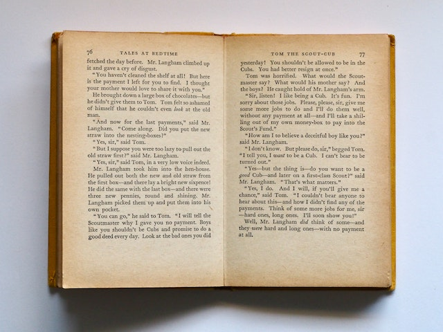

Present Simple
to prosty w budowie czas teraźniejszy, mający zastosowanie w wielu sytuacjach życia codziennego. Jest on podstawą do sprawnej komnikacji w angielskim, przez co jego znajomość to pewnego rodzaju "must have" dla każdego uczącego się tego języka.
Zatem kiedy go używamy?
- Aby wyrazić czynności, które się powtarzają, są wykonywane regularnie, np.
I go to school every day. ► Chodzę do szkoły każdego dnia.
He visits his grandmother every week. ► On odwiedza swoją babcię co tydzień.
- Zjawiska powszechnie znane, stałe, ogólnie uznawane (procesy chemiczne, prawa fizyki, przysłowia itp.), np.

Water freezes at zero degrees. ► Woda zamarza w zeru stopniach.
One apple a day keeps the doctor away. ► Angielskie powiedzenie
- Gdy opisujemy cechy oraz stany ludzi i przedmiotów, np.:
She has green eyes and blue hair ► Ona ma zielone oczy i niebieskie włosy.
His car is red. ► Jego samochód jest czerwony.
- Czynności dziejące się przez dłuższy czas, prawdy ogólne, np.

Tom lives in New York. ► Tom mieszka w Nowym Jorku.
He works in a library. ► On pracuje w bibliotece.
- Gdy streszczamy i opisujemy książki, filmy itp, np.
 Tom meets Sarah and they fall in love. They live together and plan their future. They want to buy their own house.
- Kiedy wyrażamy uczucia, np.
I love him. ► Kocham go.
She hates dogs. ► Ona nienawidzi psów.